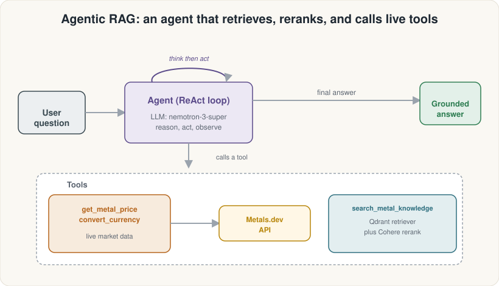
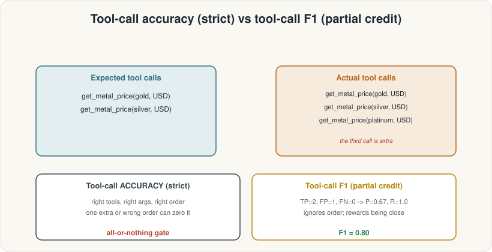

ASDRP · Agentic RAG Track · Module 11
From RAG to Agent
+ Agent Metrics
Build a MetalDesk ReAct agent with live tools, then measure its behaviour with five RAGAS agent-tier metrics.
What we'll cover
Contents
From pipeline to agent
- RAG pipeline vs. ReAct loop
- The three MetalDesk tools
- Building with
create_react_agent - Running a multi-tool query
Trace conversion
convert_to_ragas_messages- RAGAS message types
MultiTurnSample- Inspecting the trace
Agent metrics
- TopicAdherenceScore
- ToolCallAccuracy
- ToolCallF1
- AgentGoalAccuracy ×2
Phase 1 — From pipeline to agent
Why a pipeline isn't enough
Fixed sequence, every time:
- Retrieve k=10 chunks
- Rerank to top 3
- Generate answer
Dynamic loop, runtime decisions:
- Reason — what do I need?
- Act — call a tool
- Observe — read the result
- Repeat until done

Phase 1 — The MetalDesk tools
Three @tool functions
Calls
metals.dev REST API for the current spot price. Needs METALS_API_KEY.
Calls
metals.dev currency rates endpoint. Needs METALS_API_KEY.
Runs vector search + Cohere rerank over the 8-file metals corpus. Needs
COHERE_API_KEY.
from langchain_core.tools import tool
@tool
def get_metal_price(metal: str, currency: str = "USD") -> str:
"""Get the current spot price of a precious or industrial metal."""
resp = requests.get(f"{METALS_BASE}/metal/spot",
params={"api_key": os.environ["METALS_API_KEY"],
"metal": metal.lower(), "currency": currency.upper()}, timeout=20)
data = resp.json()
if data.get("status") != "success":
return f"Could not fetch price for {metal}: {data.get('error_message','unknown error')}."
return f"The current spot price of {metal} is {data['rate']['price']} {currency.upper()} per troy ounce."Phase 1 — Building the agent
create_react_agent
from langgraph.prebuilt import create_react_agent
SYSTEM_PROMPT = (
"You are MetalDesk, a precious-metals research assistant. "
"Use get_metal_price for live prices, convert_currency for currency math, and "
"search_metal_knowledge for conceptual questions. "
"If a request is outside metals and markets, politely decline."
)
agent = create_react_agent(model=chat_llm, tools=tools, prompt=SYSTEM_PROMPT)
result = agent.invoke({"messages": [{"role": "user", "content": question}]})create_react_agent makes no API call at build time. The LLM loop starts only when .invoke() runs — so building the agent is free.
ToolMessages.
Phase 2 — Trace conversion
convert_to_ragas_messages
from ragas.integrations.langgraph import convert_to_ragas_messages
from ragas.dataset_schema import MultiTurnSample
ragas_trace = convert_to_ragas_messages(result["messages"])
# ragas_trace is a list of typed RAGAS messages
for m in ragas_trace:
kind = type(m).__name__
extra = ""
if getattr(m, "tool_calls", None):
extra = " -> " + ", ".join(tc.name for tc in m.tool_calls)
print(f" {kind}{extra}")Illustrative output:
HumanMessage
AIMessage -> get_metal_price, get_metal_price
ToolMessage
ToolMessage
AIMessagetool_calls
Phase 3 — Agent metrics
TopicAdherenceScore
Measures whether the agent answered in-scope questions and declined out-of-scope ones. Scored as precision, recall, or F1 against a reference_topics list you define.
from ragas.metrics import TopicAdherenceScore
allowed = ["precious metals", "metals markets",
"investing in metals", "commodity prices"]
ta_sample = MultiTurnSample(
user_input=convo, reference_topics=allowed)
for mode in ["precision", "recall", "f1"]:
scorer = TopicAdherenceScore(llm=judge_llm, mode=mode)
score = await scorer.multi_turn_ascore(ta_sample)
print(f"{mode}: {score:.2f}")
Phase 3 — Agent metrics
ToolCallAccuracy & ToolCallF1
from ragas.messages import ToolCall
from ragas.metrics import ToolCallAccuracy, ToolCallF1
expected = [
ToolCall(name="get_metal_price", args={"metal": "gold", "currency": "USD"}),
ToolCall(name="get_metal_price", args={"metal": "silver", "currency": "USD"}),
]
sample = MultiTurnSample(user_input=ragas_trace,
reference_tool_calls=expected)
acc = await ToolCallAccuracy().multi_turn_ascore(sample)
f1 = await ToolCallF1().multi_turn_ascore(sample)"Gold" ≠ "gold".

Phase 3 — Agent metrics
AgentGoalAccuracy
Judges the outcome, not the path. Did the agent accomplish what the user actually wanted? Binary: 1 (success) or 0 (failure).
from ragas.metrics import (AgentGoalAccuracyWithReference,
AgentGoalAccuracyWithoutReference)
goal_sample = MultiTurnSample(
user_input=ragas_trace,
reference="Report the current prices of gold and silver in USD.")
score = await AgentGoalAccuracyWithReference(llm=judge_llm)\
.multi_turn_ascore(goal_sample)
print(f"Goal accuracy (with ref): {score:.0f}")
Phase 3 — All five agent metrics
Agent metrics at a glance
| Metric | What it grades | Output | Use when |
|---|---|---|---|
TopicAdherenceScore |
Scope discipline (in- vs. out-of-scope turns) | 0–1 (precision / recall / F1) | Agent has a defined domain boundary |
ToolCallAccuracy |
Right tools, right args, right order | 0 or 1 (strict) | Exact sequence is required |
ToolCallF1 |
Tool precision & recall (partial credit) | 0–1 | During development; order doesn't matter |
AgentGoalAccuracyWithReference |
Outcome vs. supplied reference | 0 or 1 | You can define the ideal outcome |
AgentGoalAccuracyWithoutReference |
Outcome (judge infers goal) | 0 or 1 | Goal is implicit / hard to specify |
Summary
What you built in Module 11
From pipeline to agent
- Understood the ReAct reason→act→observe loop
- Defined three
@toolfunctions (live price, currency, RAG knowledge) - Built a MetalDesk agent with
create_react_agent - Ran a multi-tool query and read the trace
Trace conversion
- Translated a LangGraph run with
convert_to_ragas_messages - Identified RAGAS message types in the trace
- Packaged the trace in a
MultiTurnSample
Agent metrics
- Scored topic adherence (precision, recall, F1)
- Scored tool-call accuracy (strict)
- Scored tool-call F1 (partial credit)
- Scored agent goal accuracy (with & without reference)
Run the notebook: 11_rag_to_agent.ipynb — and you will have measured every layer of the agent: scope, actions, and outcomes.